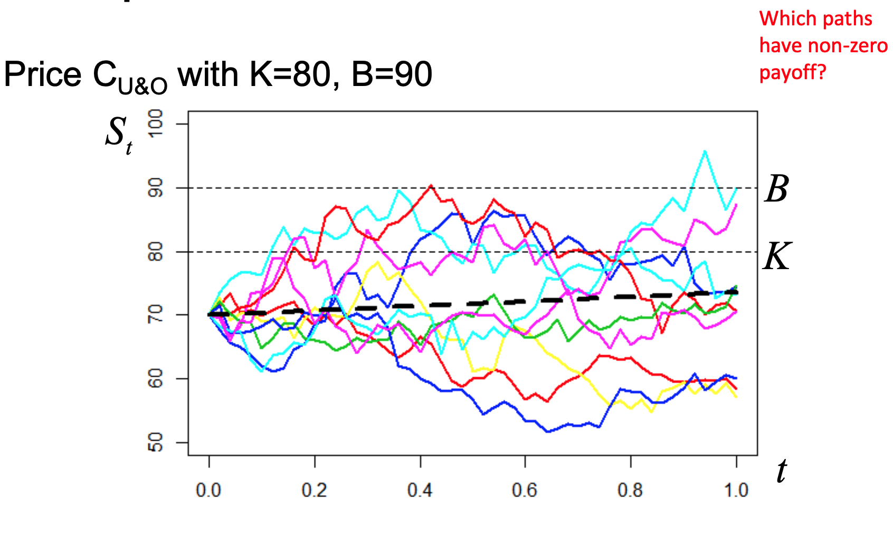
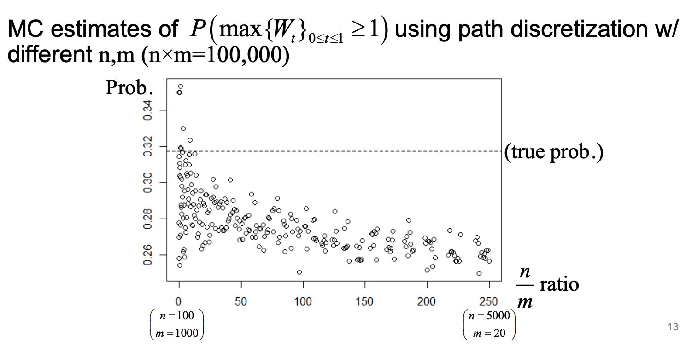
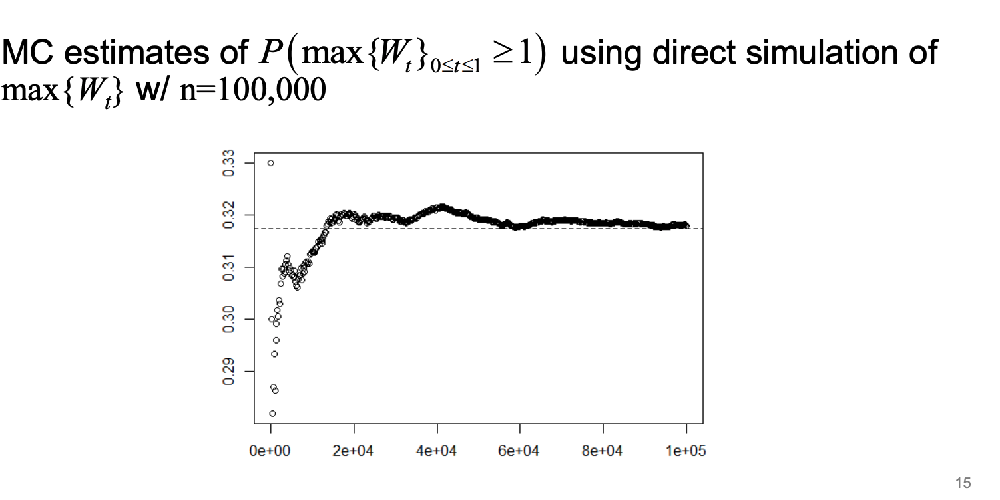
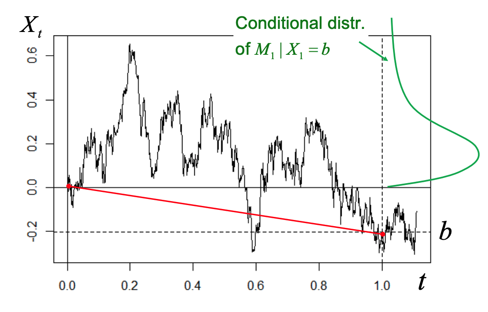
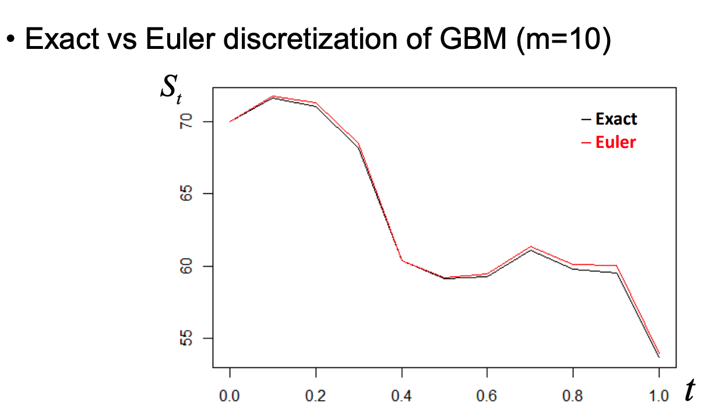

Chapter 13 Pricing Derivatives
13.1 Path Dependent Options
First we’ll look at options where the price depends on (aspects of) the entire asset price path. Unlike a European option, whose payoff depends only on the asset price at expiry.
13.1.1 Barrier Options
An example is a barrier option, where the payoff depends on whether the asset price crosses some barrier prior to expiry. At expiry the payoff will be similar to a call/put, but differs between whether the barrier is hit (activated/knocked out)
4 types of Barrier options:
- Up-and-out (U&O): price starts below barrier & has to move up for option to be knocked out
- Down-and-out (D&O): price starts above barrier & has to move down for option to be knocked out
- Up-and-in (U&I): price starts below barrier & has to move up for option to become activated
- Down-and-in (D&I): price starts above barrier & has to move down for option to become activated
13.1.1.1 Example
Let C/P be price of plain Euro call/put option, CD&O be that of Euro down-&-out call, etc
- Find \(C_{U\&O}\) when barrier \(B < K\) strike
The option needs to reach \(K\) in order to have a positive pay off, but in order to reach that price, it needs to pass the barrier \(B\). However once it passes \(B\), then the call option is worthless. \(\therefore C_{U\&O} = 0\)
- Find \(P_{U\&I}+P_{U\&O}\), where options have same B, K, T, etc
We can create Put-Call Parity, the sum of both of them should be equivalent to the price of a normal European put \(P=P_{U\&I}+P_{U\&O}\). If under barrier, only \(P_{U\&O}\) has value, while if over the barrier, only \(P_{U\&I}\) has value.
Similarly,
- \(C=C_{U\&I}+C_{U\&O}\)
- \(P=P_{D\&I}+P_{D\&O}\)
- \(C=C_{D\&I}+C_{D\&O}\)
This is because having both of these options, it is equivalent to having an active option at all times.
13.1.1.2 Barrier options only depend on min/max
\[ M_{T} = max\left\{ S_{t} \right\} _{0\leq t\leq T} \quad \& \quad m_{T} = min\left\{ S_{t} \right\} _{0\leq t\leq T} \] so where \(\mathbb{I}_{\left\{ M_{T}<B \right\}}\) is an indicator variable that the max of \(S_{T}\) over time \(T\) crosses \(B\) or not,
- \(C_{U\&O} = e^{-rT}\mathbb{E}\left[ (S_{T}-K)_{+}\mathbb{I}_{\left\{ M_{T}<B \right\}} \right]\)
- We can simulate \(S_{T}\) and \(M_{T}\) dependently, as \(S_{T}\) is some random walk
- Use a Brownian Bridge to do it
- \(C_{D\&O} = e^{-rT}\mathbb{E}\left[ (S_{T}-K)_{+}\mathbb{I}_{\left\{ m_{T}>B \right\}} \right]\)
- Want the minimum to be greater than the barrier for this option to keep it’s value.
- \(C_{U\&I} = e^{-rT}\mathbb{E}\left[ (S_{T}-K)_{+}\mathbb{I}_{\left\{ M_{T}>B \right\}} \right]\)
- \(C_{U\&O} = e^{-rT}\mathbb{E}\left[ (S_{T}-K)_{+}\mathbb{I}_{\left\{ m_{T}<B \right\}} \right]\)
13.2 Simulating Geometric Brownian Motion (GBM) Paths
To price general path -dependent options, we need to simulate asset price paths \(\left\{ S_{t} \right\}_{0\leq t\leq T}\)
In practice, we must discretize time: simulate asset price at #m points
\[ \left\{ S(t_{i}) \right\} ^{m}_{i=0} \text{ where }t_{i} = i \frac{T}{m} = i \cdot \Delta t, \forall i = 1,\dots ,m \] Which allows us to create GBM \(dS_{t} = rS_{t}dt+\sigma S_{t}dW_{t}\) (Risk-Neutral Measure)
\[ S(t_{i}) = S(t_{i-1})\exp \left\{ \left( r- \frac{\sigma^{2}}{2} \right)\Delta t + \sigma \sqrt{ \Delta t }\times Z_{i} \right\} \text{where } \begin{cases} \Sigma t = \frac{T}{m} \\ Z_{i} \sim^{iid} N(0,1) \\ i=1,\dots,m \end{cases} \]

Discounted prices are martingales(?) Only the purple path above K at time \(T\) will have a non-zero payoff, the cyan path crossed the barrier above so it is out. The rest are under the strike and worthless.
13.3 Monte Carlo for Barrier Options
The above will be biased, even if the number of iterations is large. This is because there may still be some time point that we did not simulate, the barrier could have been crossed and the value of the an option, ex \(C_{U\&O}\) would have been worthless. Hence the simulation will always overestimate the value of an option, because it underestimates the maximum.
To address this bias, you could increase \(m\), and let it go to \(\infty\), we could be more accurate but the computation would become increasingly expensive.
There is a tradeoff between # paths(n) and # steps (m), \[ n \uparrow \iff Var\ \downarrow, m \uparrow \iff bias \ \downarrow \quad \text{which represents the Bias/Variance Trade-off} \]
13.3.1 Example: Find maximum by time T
For a standard BM \(\left\{ W_{t} \right\}\) find the distribution of maximum by time T:
-Assume std BM always starts at 0 \[ \begin{aligned} M_{t} &= max\left\{ W_{t} \right\} _{0\leq t\leq T}\quad \text{WTF CDF }P(M_{T}\leq y)\\ \\ \text{First look at: for }& x\leq y, P(W_{T}\leq x, M_{T}\geq y) = \underbrace{ P(W_{T}\geq 2y-x, \overbrace{ M_{T}\geq y }^{ \text{always true} }) }_{\text{By relfection principle} }\\ \end{aligned} \]
All paths that start at 0, cross above \(y\) at some point, and end at some value \(x\) which is below \(y\).
By the reflection principle, the path is just as likely to have the reflected path. We first consider the first time the path hits \(y\), and we take the symmetric path to the existing one (equally likely as the true path).
So the probability that the path ends below \(x\) and hits \(y\) at some point, we can just look at when it hits \(y\) and find when we cross \((y-x)\) above \(y\), which is equivalent to hitting \(x\) from \(y\) eventually. This quantity becomes \(y+(y-x) = 2y-x\).
\[ \begin{aligned} \text{For } x\leq y,\ \underbrace{ P(W_{T}\leq x, M_{T}\leq y) }_{ P(A \cap B) } &= \underbrace{ P(W_{T}\leq x) }_{ P(A) } - \underbrace{ P(W_{T}\leq x, M_{T}\geq y) }_{ P(A \cap B^{C}) } \\ &= P(W_{T}\leq x) - P(W_{T}\geq 2y-x)\\ \\ \implies \text{For } x=y, P(W_{T}\leq y, \overbrace{ M_{T}\leq y }^{ \implies W_{T} \leq y }) &= P(M_{T}\leq y) = P(W_{T}\leq y) - P(W_{T}\geq 2y-y)\\ &= P(W_{T}\leq y)-P(W_{T}\geq y) \end{aligned} \]
We know the distribution of \(W_{T}\) is normal with \(\mu=0, \sigma^{2}=T\) (for Brownian motion), and because of symmetry of the Normal distribution,
\[ \begin{aligned} &= P(W_{T}\leq y)-P(W_{T}\leq -y)\\ &= P(-y\leq W_{T} \leq y)\\ &= P(|W_{T}| \leq y) \quad \text{As $y$ will always be positive}\\ \end{aligned} \]
\[ \begin{gathered} \implies M_{T} \sim |W_{T}| \quad \text{Which is the folded normal, only pos } x>0 \end{gathered} \]
The maximum is distributed just like the absolute value of the Std Brownian motion at time \(T\)
13.3.2 Example: Find Prob of W_T hitting barrier B by time T
The probability of standard BM \(\left\{ W_{t} \right\}\) hits barrier \(B=1\) before time \(T=1\) is \[ \begin{aligned} M_{T} \sim |W_{T}| &\implies P(\text{BM hits 1 before } T=1)\\ &= P(M_{1}\geq 1) = P(\overbrace{ |W_{T}| }^{ \sim N(0,1) } \geq 1)\\ &= 2 P(Z \geq 1) = 2 \cdot\overbrace{ \Phi(-1) }^{ \sim \text{CDF of std Normal} }\\ &= 0.317862 \end{aligned} \]
13.3.2.1 By simulation
If we don’t know the reflection principle, and we wanted to simulate it instead:
- Simulate \(m\) random Normals \(\sim N\left( 0, \frac{1}{m} \right)\) and take their cumulative sum to create a path which ends at time 1
- Do this for \(n\) paths
- Calculate the proportion of paths which had a max \(M_{T}\) above the barrier \(B\)

This plot shows the trade off between granularity (\(m\)) and number of paths (\(n\)) when estimating the probability When \(m\) is low the bias is high but the variance is low, whereas on the left side the variance is really high but the bias is low (close to true prob)
13.3.3 Example: MC Simulation w/o bias
Estimate probability that standard BM hits 1 before time 1, with MV but without bias? We can look at the distribution of maximum.
We can generate values of \(M_{T}\) directly by generating a standard brownian motion \(W_{T}\) and setting \(M_{T} = |W_{T}|\). We then estimate the probability that \(|W_{T}|\) crosses 1, and as we generate more Normal RVs (\(W_{T}\)), the probability will converge.

13.4 Extrema of Brownian Motion
- However, one can easily simulate random deviates of maximum using Brownian bridge
- Construction allows for general treatment of extrema of various processes
The reflection principle doesn’t work for arithmetic BM, due to drift. (The paths that go in the direction of the drift will have higher probability than the paths that oppose it.)
If we fix the starting and ending point of our arithmetic BM however, we can still kind of use the reflection principle.
Conditional on a final point \(X_{T} = h\) then the maximum \((M_{T}|X_{T}) = max_{t}(X_{t}|X_{T})\) of the Brownian bridge process has a Rayleigh distribution.
\[ P(M_{T}\leq m | X_{T} = b) = 1 - \exp \left\{ -2 \frac{m(m-b)}{\sigma^{2}T} \right\} \quad \forall m\geq (0 \cup B) \] Note that distribution of conditional maximum is independent of the drift, given \(X_{T}=b\)
The lower the ending point, the closer the max value is to 0, the starting point.

13.4.1 Procedure to generate maxima
Procedure for simulating maxima of arithmetic BM: 1. Generate \(X_T \sim N\left(\mu T, \sigma^2 T\right)\) 2. Generate \(U \sim \operatorname{Uniform}(0,1)\) 3. Calculate \(M_T \mid X_T=\frac{X_T+\sqrt{X_T^2-2 \sigma^2 T \log (U)}}{2}\)
For maxima of geometric BM, exponentiate arithmetic BM result
13.4.3 Example: Simulate minimum of arithmetic BM based on max
If we have an arithmetic BM with some drift \(\mu\) and volatility \(\sigma\), we can simulate from the exact distribution the max of the process and the ending price.
We can also use this to simulate the minimum by using symmetry. You’d simulate arithmetic BM paths with negative drift \(-\mu\) and find it’s maximum. That would become minimum of the normal arithmetic BM with positive \(\mu\).
13.5 Time Discretization
What happens when a stochastic process which is not straight forward? (Not GBM or arithmetic?), for example with stochastic drift and stochastic volatility.
The process is no longer log Normal, so we must use discretization.
\[ dS_{T} = \mu_{t}dt + \sigma_{t}dW_{t} \]
- Path-dependent options generally require simulation of entire discretized path
- Exceptions are options depending on maximum (e.g. barrier, lookback)
- If prices do not follow GBM, it is not generally possible to simulate from exact distribution of asset prices
- Need to approximate sample path distribution over discrete times
13.5.1 Euler Discretization
Consider general SDE where drift/volatility can depend on time \((t)\) and/or process (\(St\)) \[ d S_t=\mu\left(t, S_t\right) d t+\sigma\left(t, S_t\right) d W_t \] - There is no general explicit solution for \(S_{t}\) - Distribution of St is unknown (in closed form) - Notable exceptions are Arithmetic/Geometric BM - Behavior of \(S_{t}\) can be approximated using discretization scheme
SDE: \(d S_t=\mu\left(t, S_t\right) d t+\sigma\left(t, S_t\right) d W_t\) Discretize time \(t_i=i(T / m)=i \Delta t, i=0, \ldots, m\) Simulate (approx.) path recursively, using \[ \begin{gathered} S\left(t_i\right)=S\left(t_{i-1}\right)+\mu\left(S\left(t_{i-1}\right), t_{i-1}\right) \Delta t+\sigma\left(S\left(t_{i-1}\right), t_{i-1}\right) \sqrt{\Delta t} Z_i \\ \quad \text { for } i=1, \ldots, m, \text { where } Z_i \sim^{i i d} N(0,1) \end{gathered} \] - To approximate distribution of \(S(T)\), generate multiple (#n) discretized paths - Method called Euler (or \(1^{\text {st }}\) order) discretization
